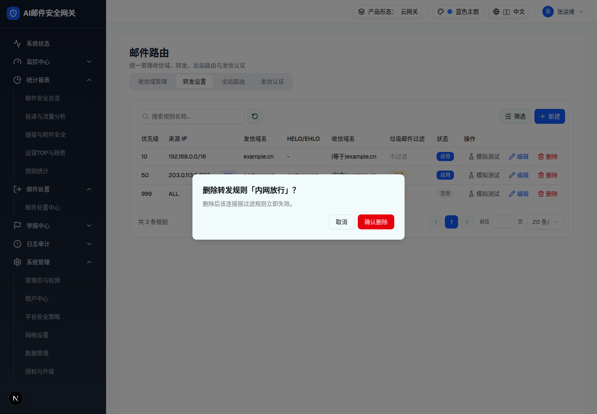

| 所属组件 | 2.4 转发设置 Tab |
| 触发路径 | 层级0 行内「删除」（实测第 1 行 优先级10「内网放行」）→ 居中 AlertDialog |
预览可操作：「取消」/「确认删除」→ Toast「转发规则已删除」（demo 同时从列表移除）。
删除后该连接层过滤规则立即失效。

| 元素 | 规格（浏览器实测） |
|---|---|
| 标题 | 「删除转发规则「规则名」？」（动态插入 ruleName——列表虽不显示规则名列，删除确认可见） |
| 正文 | 「删除后该连接层过滤规则立即失效。」（无引用/连带提示） |
| 按钮 | 「取消」/「确认删除」bg-red-600；确认后行移除 + Toast，无撤销 |
| 比对项 | demo 实际 DOM | 嵌入的 HTML | 是否一致 |
|---|---|---|---|
| 根节点 | [role=alertdialog][data-state=open] | 同（中和居中定位） | 一致 |
| 标题动态名 | 「内网放行」 | 同 | 一致 |
| 节点数 | 7 | 7 | 一致 |